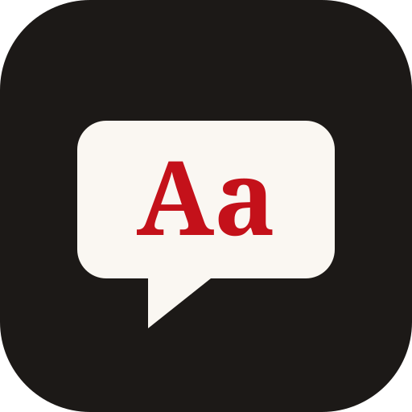

VocabBon dia!¡Hola!你好！Shwmae!
Which language would you like to learn?
Català a punt
Catalan · words & verbs
l'esmorzar
breakfast
Español
Spanish · words & verbs
la sobremesa
lingering at the table after a meal
粵講粵啱
Cantonese · words & tones
飲茶
jam2 caa4 · to have yum cha
成语一点通
Chinese idioms · 简体 & 繁體
画龙点睛
huà lóng diǎn jīng · to add the finishing touch
Cymraeg bob dydd
Welsh · words, mutations & numbers
hiraeth
HEER-aeth · a deep longing for home
No account. Nothing to install. Add it to your home screen if you like.